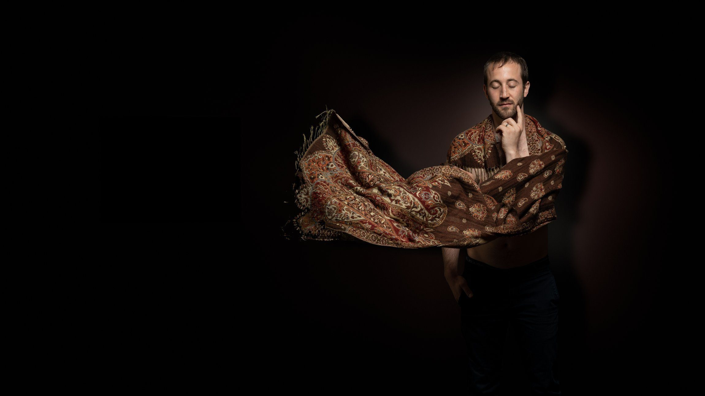
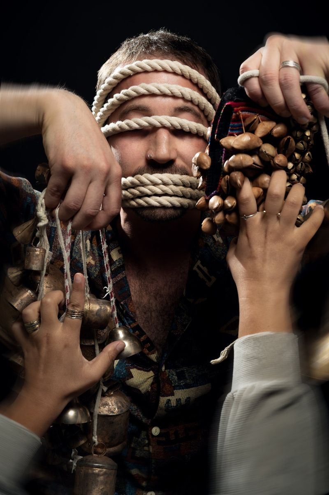
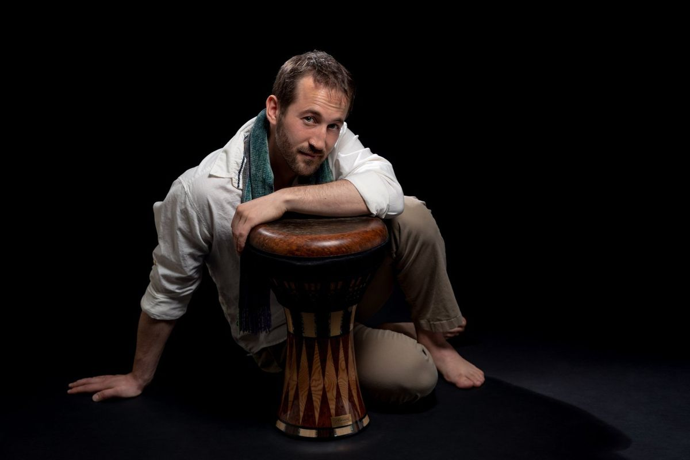
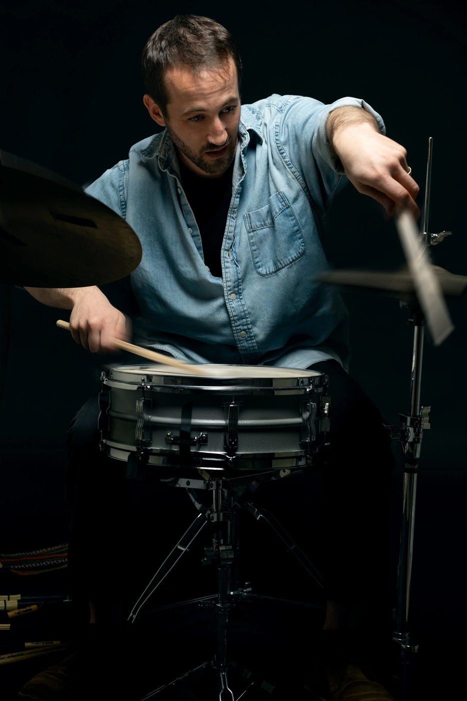
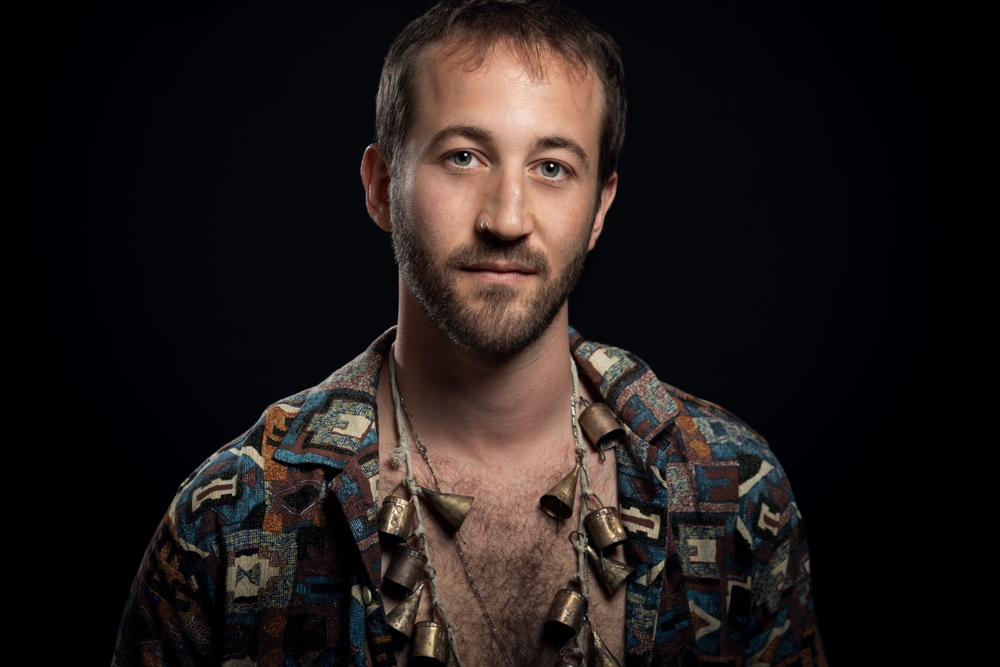
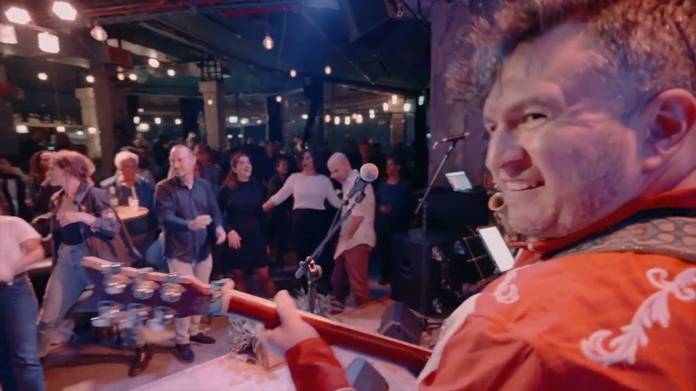

מה נדב עושה היום
נדב, נגן כלי הקשה המתמחה בכלי הקשה מהמזרח התיכון ובמערכת תופים, מלחין ומוביל מופעים מקוריים והרכבים, והוא נגן כלי הקשה מלווה מבוקש, המנגן עם אמנים פורצי דרך בישראל ובעולם.

מלחין ומוביל הרכבים
מופעים מקוריים כמו "מראה" ו"אלמה דה באטה – נשמת התוף", וההרכבים שנדב מוביל ושהיה שותף להקמתם, מבומבראס ועד Playground Trio.

נגן כלי הקשה מלווה
מגוון רחב של כלי הקשה, עם התמחות בכלים מסורתיים מהמזרח התיכון. המערך האישי של נדב משלב אותם עם מערכת תופים מודרנית, ומתאים להרכבים ולמסורות רבים: מוזיקה פרסית, מרוקאית, אלג׳ירית ובלקנית, והזמר העברי.

מורה ומחנך
שיעורים בכלי הקשה מהמזרח התיכון ובמערכת תופים, כיתות אמן וסדנאות קבוצתיות, המבוססים על השיטה שנדב פיתח.

נגן אחד, מסורות רבות
נדב פרידמן הוא נגן כלי הקשה, מלחין ומורה ישראלי. הוא יוצר מופעים מקוריים, ביניהם "אלמה דה באטה" ו"מראה", מוביל את להקת הבלקן-צוענית בומבראס, שותף להובלת Playground Trio, ומופיע עם אמנים ובהם איתי ארמון, שמעון בוסקילה ורותם כהן.
המוזיקה שלו התגבשה בירושלים, שם היה מחברי היסוד של התזמורת האנדלוסית המדרסה ומייסד שותף של סולץ טריו. משם המשיך לתואר שני בקונסרבטוריון של ניו אינגלנד בבוסטון, הופיע ולמד עם דנילו פרז, דייב הולנד וג׳ייסון מורן, ובשנת 2023 חזר לישראל עם אלבום הבכורה שלו, Songs for Empathy. כיום הוא מלמד בקונסרבטוריון הסדנה, בקונסרבטוריון בקריית אונו ובסטודיו שלו בנווה שלום, ומעביר כיתות אמן, לאחרונה באוניברסיטת בר-אילן.
סרטונים אחרונים
